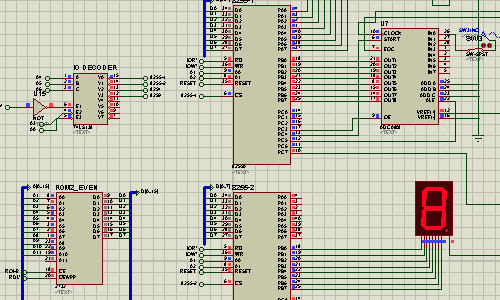

Projects and Algorithms
Multi-Object Tracking
Localization and Path Planning for Autonomous Vehicles
Road network traversals using Contraction Hierarchies
Facial Identification System using Siamese Networks
Object Detection & Blurring using Haar Cascades for privacy protection
Dynamic Hand Gesture Control using Deep Learning

Ant Exploration using RL
- 
Voice Digitizer